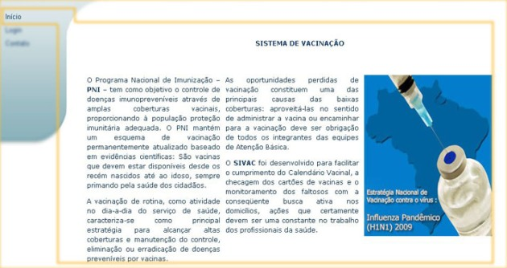
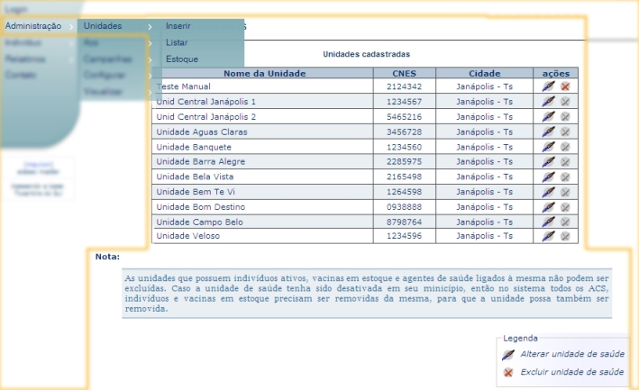
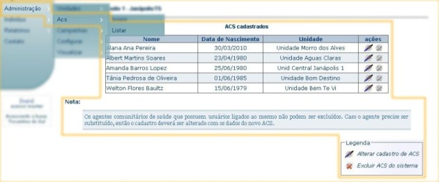
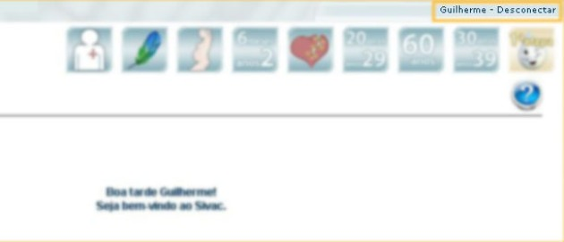
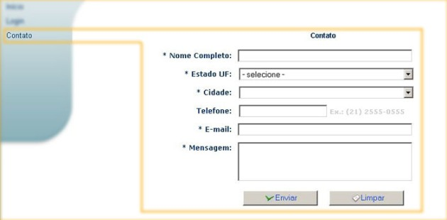

O Sistema informatizado de vacinação — Sivac — é uma ferramenta de auxilio aos profissionais do Sistema Único de Saúde para processar de forma integrada e online o registro e monitoramento, individual e coletivo, da aplicação de vacinas no país.
O Sivac foi criado para suprir a necessidade da monitoração do sitema vacinal brasileiro de forma coerente e precisa.
Através do sistema é possível:
O sistema se encontra previamente povoado com todas as vacinas existentes, além de todos os municípios do Brasil e também sua população
. Pessoas que ainda não estão no sistema poderão ser cadastradas e os dados poderão ser atualizados a qualquer momento.
O Sivac poderá ser configurado para suportar modificações em características específicas de cada vacina (idade, sexo, etnia, estado), permitindo que se adéque a surtos ou epidemias de doença cuja vacinação esteja incluída no PNI. Atendendo a necessidade do município ou estado, podem ser adotadas medidas de controle que incluem a vacinação em massa da população-alvo.
O objetivo principal do Sivac é proporcionar, com o tempo, um mecanismo confiável de registro e monitoramento do sistema vacinal brasileiro através de dados reais de vacinação. O sistema poderá auxiliar a tomada de decisão dos gestores acerca do controle de doenças imunopreveníveis através de amplas coberturas vacinais, para que a população possa ser provida de adequada proteção imunitária, além de poupar recursos e gastos desnecessários.
Esta página descreve¹ o objetivo do sistema, com breve comentário sobre campanhas de vacinação. Quando clicado retornará para a página inicial do Sivac.

Nota:
¹ O conteúdo desta página pode ser alterado somente pelo administrador de acesso master.
Ao acessar o Sivac é necessário selecionar o estado em que está localizado a sua unidade de saúde e clicar no botão prosseguir para efetuar o login no sistema.
Em seguida o usuário do Sivac deve digitar o login e a senha e clicar no botão entrar.


Formulário para o cadastro da unidade de saúde¹ correspondente, constituído dos campos nome, CNES (Cadastro Nacional de Estabelecimento de Saúde – identificação da unidade de saúde, que é única em todo Brasil e determinada pelo Ministério da Saúde), cidade, bairro, logradouro, telefone e cep.

Nota:
¹ Uma unidade de saúde só poderá ser cadastrada por um administrador de acesso master.
Permite listar¹ as unidades cadastradas, com a opção de editar ou excluir² através das ações correspondentes, detalhadas na legenda abaixo. A ação de alteração da unidade permite ao usuário modificar os dados da unidade através de uma tela com o formulário correspondente. A ação de exclusão faz abrir uma tela para a confirmação da exclusão desta unidade.

Nota:
¹ O menu para listar e excluir as unidades só será exibido ao administrador de acesso master.
² Ao administrador de acesso padrão será exibido o menu alterar diretamente, que permitirá ao mesmo a alteração de sua unidade, não exibindo a lista de unidades de saúde
O formulário tem o objetivo de alimentar o estoque da unidade de saúde. Para isso, selecione a unidade correspondente (caso seja administrador master), a vacina e a quantidade a ser incrementada e escolha confirmar. Caso tenha inserido a quantidade errada, escolha imediatamente estornar para voltar ao estoque anterior. O estorno removerá somente a quantidade inserida da operação anterior. Não é possível estornar vacinas adicionadas anteriormente. A lista abaixo consiste no nome vacina, quantidade em estoque e unidade de saúde em que o estoque foi alocado.

O formulário contém a descrição dos dados para o cadastro de um agente comunitário de saúde (ACS). Os campos que possuem o símbolo * (asterisco) precisam ser preenchidos, pois são obrigatórios. Ao terminar de preencher o formulário, utilize o botão inserir para confirmar o cadastro, e caso queira apagar os dados digitados para preencher novamente o formulário, basta utilizar o botão limpar.

Permite listar os agentes comunitários de saúde (ACS) cadastrados, com a opção de alterar dados¹ ou excluir².

A ação de alterar dados permite modificar os dados do cadastro através de uma tela com o formulário correspondente. Caso queira apagar os dados digitados para preencher novamente, basta utilizar o botão limpar. Após preencher os campos solicitados no formulário basta confirmar para validar as informações.

A ação de exclusão faz abrir uma tela para a confirmação da exclusão deste ACS.
Nota:
¹ O menu listar ACS será exibido ao administrador de acesso master e padrão. Ao administrador de acesso padrão será exibido somente a opção alterar, que permitirá a modificação dos dados de cadastro.
² A opção excluir ACS só será permitida ao administrador de acesso master.
O formulário tem o objetivo de cadastrar uma nova campanha de vacinação.
Para criar¹ a nova campanha preencha o formulário, o campo do texto complementar (opcional) e utilize o botão avançar. Na próxima página selecione a(s) vacina(s) integrante(s) da campanha. Caso queira desfazer a escolha da(s) vacina(s) clique em desmarcar. Para cadastrar a vacina utilize o botão adicionar.
Antes de finalizar o processo de criação da nova campanha, na coluna características utilize o botão listar e/ ou adicionar² para acrescentar as características dos indivíduos que serão incluídos na faixa vacinável da população.
O botão detalhes ao ser clicado exibe, somente para leitura, as características da vacina. Com estas etapas concluídas utilize o botão finalizar para cadastrar a campanha.

Nota:
¹ Somente o administrador de acesso master está autorizado adicionar nova campanha.
² O Sivac disponibiliza as características padrão da vacina determinadas pelo Ministério da Saúde. Portanto antes de adicionar as características à campanha realize a leitura detalhada das características padrão vacina.
Permite listar¹ as campanhas cadastradas, com a opção de editar² ou excluir².
Ao clicar em editar uma campanha, um formulário com os respectivos dados desta será exibido. É possível, no formulário, alterar o nome e a data de início e de finalização da campanha, cadastrar e excluir as vacinas que farão parte da campanha, listar características e exibir detalhes da(s) vacina(s) e por fim adicionar um texto complementar para ser exibido quando clicar no botão visualizar de uma campanha.

Nota:
¹ Ao usuário padrão só é permitido a visualização da campanha através do campo ações no botão visualizar campanha.
² Ao administrador de acesso master, no campo ações, é permitido editar, excluir e visualizar campanhas.
Ainda na opção editar clique no botão adicionar vacina. Selecione a(s) vacina(s) integrante da campanha e confirme no botão adicionar.
Caso queira desfazer a escolha da(s) vacina(s) clique em desmarcar e selecione outra(s) vacina(s). Caso tenha adicionado a(s) vacina(s) incorreta(s), deve-se, no grupo vacinas selecionadas, clicar no botão excluir.

Nota:
¹ Somente o administrador de acesso master está autorizado adicionar vacina.
Este grupo exibe a(s) vacina(s) adicionada(s) a campanha, assim como, permite adicionar¹, editar¹ e excluir¹ a(s) característica(s) da vacina em uma campanha.

Nota:
¹ Somente o administrador de acesso master está autorizado a realizar esta operação.
Em listar vacina, é possível visualizar informações rápidas e editar¹ ou excluir as características dos indivíduos que serão incluídos na faixa vacinável da população.
Caso altere ou inclua um novo dado é necessário salvar.
Nota:
¹ O Sivac disponibiliza as características padrão da vacina determinadas pelo Ministério da Saúde. Portanto antes de adicionar novas características recomendamos utilizar a opção alterar. Caso tenha dúvida, consulte a legenda no rodapé da página em editar vacina.
Ao clicar no botão adicionar¹ é possível acrescentar dados das características dos indivíduos que serão incluídos na faixa vacinável da população como idade, sexo, etnia(s) e o estado(s) em que a(s) vacina(s) da campanha será permitida.

Nota:
¹ O Sivac disponibiliza as características padrão da vacina determinadas pelo Ministério da Saúde. Portanto antes de adicionar novas características recomendamos utilizar a opção alterar no botão listar. Caso tenha dúvida, consulte a legenda no final da tela em editar vacina.
No botão detalhe exibido ao lado de cada vacina adicionada a uma campanha, é possível ler, de forma detalhada, as características padrão da vacina.

Permite o usuário excluir a(s) vacina(s) cadastrada(s) em uma campanha.

O texto exibido na tela inicial do Sivac pode ser modificado¹. Para alterá-lo utilize o botão limpar para redigir o novo texto e o botão confirmar para salvar a modificação.

Nota:
¹ Somente o administrador de acesso master pode alterar o texto inicial.
O texto pode conter marcações HTML simples (como <br /> ou <p></p>) para deixar um trecho ou todo o texto formatado.
O formulário tem o objetivo de localizar o cadastro do indivíduo que será vacinado. Ao terminar de preencher o formulário verifique a cidade e o estado selecionado e utilize o botão buscar para iniciar a busca.

Nota:
O Sivac automaticamente seleciona o seu município para realizar as buscas, caso queira buscar o indivíduo em outro estado ou cidade desmarque a opção que seleciona o seu município e escolha o um novo estado e cidade.
O formulário tem o objetivo de cadastrar o novo indivíduo que será vacinado. Os campos que possuem o símbolo * (asterisco) precisam ser preenchidos, pois são obrigatórios. Ao terminar de preencher o formulário, utilize o botão confirmar para que o cadastro seja feito; caso queira apagar os dados digitados para preencher novamente o formulário, basta utilizar o botão limpar.

O formulário tem o objetivo de registrar a vacinação do indivíduo na ocorrência de campanhas ou vacinações de rotina. Para iniciar o registro de vacinação do indivíduo, selecione as opções de campanha e vacina e preencha o campo nome e opcionalmente data de nascimento ou CPF.
Após o preenchimento dos critérios, selecione opcionalmente o estado e a cidade em que o indivíduo é morador e utilize o botão buscar para iniciar a busca. Ao clicar sobre o nome do indivíduo², você será direcionado para a tela de vacinação. Caso tenha marcado a opção vacinação retroativa e digitado corretamente a senha, então a busca listará nomes que levarão para a tela de vacinação retroativa.
Para confirmar o registro da vacina¹ clique no botão aplicar, em forma de seringa.
Caso tenha dúvidas sobre a situação vacinal do indivíduo confira a legenda no rodapé da página antes de vacinar.

Nota:
¹ Verifique a data de nascimento antes da vacinação.
² Indivíduos que não tomaram nenhuma dose se apresentam em vermelho, os que iniciaram o ciclo estão em azul e os que já completaram o ciclo estão em verde.
Esta opção permite registrar a aplicação de vacinas que ocorreram em uma data posterior à atual. Para iniciar o registro da vacinação proceda de forma padrão, selecione a opção data retroativa e degite a senha de autorização para prosseguir.

Para confirmar o registro da vacinação¹ é preciso que seja digitado a data em que realmente ocorreu a vacinação e as letras e números que aparecem na imagem da área de vacinação retroativa. Para prosseguir com a vacinação, clique no botão confirmar.

Você poderá opcionalmente descontar esta dose do seu estoque (caso a data retroativa seja recente e usou realmente uma dose da vacina estocada em sua unidade). Proceda com atenção ao vacinar com datas retroativas e prefira sempre a vacinação convencional.
Caso tenha dúvidas sobre a situação vacinal do indivíduo confira a legenda no rodapé da página antes de vacinar.
Nota:
¹ Verifique a data de nascimento antes da vacinação.
O formulário tem a função de registrar o indivíduo que apresentou o evento adverso após a aplicação da vacina¹. Para registrar a(s) intercorrência(s) preencha o campo nome e utilize o botão buscar para encontrar o indivíduo que foi vacinado. O Sivac listará os indivíduos localizados. Para adicionar o evento adverso clique no nome localizado, selecione a vacina, o evento adverso apresentado e utilize o botão adicionar para confirmar o registro.

Nota:
¹ O administrador de acesso padrão também é apto a realizar esta operação
O relatório tem a finalidade de listar os indivíduos¹ que iniciaram ciclo de vacinação e não concluiram. É gerado por estado, cidade e o período em que a dose se encontra.
Para gerar o relatório selecione o estado e a cidade, informe o período e o nome² do indivíduo, e utilize o botão buscar para gerar. Abaixo será exibido o nome do indivíduo encontrado e que deverá ser clicado para visualizar a data em que a vacina deveria ter sido aplicada.

Caso deseje continuar o cliclo, mesmo após conferir que o prazo ideal para a aplicação da vacina tenha sido ultrapassado, clique sobre o nome da vacina, confirme na janela que deseja reiniciar ou reiniciar o ciclo de vacinação e registre a aplicação da vacina clicando no botão aplicar, em forma de seringa.

Nota:
¹ O administrador de acesso pardrão também é apto a realizar esta operação.
² O nome a ser buscado deve conter no mínimo 3 letras.
O relatório tem a finalidade de listar os indivíduos vacinados dentro de um determinado estado e cidade por vacina aplicada. Para gerar o relatório selecione o estado, a cidade, a vacina e utilize o botão confirmar para gerar. Em seguida uma nova página será exibida com a lista de vacinados.

Nota:
O administrador de acesso padrão também é apto a realizar esta operação.
O relatório tem a finalidade de listar os indivíduos¹ vacinados dentro de um determinado estado e cidade, por vacina aplicada e em um determinado período. Para gerar o relatório selecione o estado, a cidade, a vacina, informe o período e utilize o botão confirmar para gerar. Em seguida uma nova página será exibida com a lista de vacinados.

Nota:
¹ O administrador de acesso padrão também é apto a realizar esta operação.
O relatório tem a finalidade de listar os indivíduos¹ não vacinados dentro de um determinado estado e cidade por vacina. Para gerar o relatório selecione o estado, a cidade, a vacina e utilize o botão confirmar. Em seguida uma nova página será exibida com a lista de não vacinados.

Nota:
¹ O administrador de acesso padrão também é apto a realizar esta operação.
O relatório tem a finalidade de listar os indivíduos¹ não vacinados dentro de um determinado estado e cidade por vacina em um determinado período. Para gerar o relatório selecione o estado, a cidade, a vacina, informe o período e utilize o botão confirmar para gerar. Em seguida uma nova página será exibida com a lista de não vacinados.

Nota:
¹ O administrador de acesso padrão também é apto a realizar esta operação.
O relatório tem a finalidade de listar os indivíduos¹ que iniciaram o ciclo de vacinação e não concluíram. É gerado por vacina aplicada, por estado e cidade, e o período de retorno do indivíduo a unidade de saúde para aplicação de nova dose.
Ao clicar em algum dos individuos, sera exibida uma nova tela com o relatório das vacinas com doses a vencer para a pessoa escolhida.

Para gerar o relatório selecione o estado, a cidade e a vacina, informe o período e utilize o botão confirmar para gerar. Em seguida uma nova página será exibida com a lista.
Nota:
¹ O administrador de acesso padrão também é apto a realizar esta operação.
O relatório tem a finalidade de listar, através do nome do indivíduo, as vacinas com as suas respectivas datas de aplicação, as vacinas que podem ser aplicadas e a data de retorno e ideais para aplicação de nova(s) dose(s).
Para gerar o relatório informe o nome do indivíduo no formulário e utilize o botão buscar para encontrá-lo. O Sivac listará na cor vermelha os indivíduos. Clique sobre o nome que deseja visualizar a caderneta e em seguida uma nova página será exibida com as informações.


Nota:
O administrador de acesso padrão também é apto a realizar esta operação.
O relatório tem a finalidade de listar, através do nome do indivíduo, a(s) vacina(s) e a quantidade de dose(s) aplicadas com as suas respectivas datas de vacinação.
Para gerar o relatório informe o nome do indivíduo no formulário e utilize o botão buscar para encontrá-lo. Clique sobre o nome que deseja visualizar e o Sivac exibirá em seguida uma nova página com as informações das vacinas aplicadas.

Nota:
O administrador de acesso padrão também é apto a realizar esta operação.
O relatório tem a finalidade de listar os indivíduos vacinados em cada unidade de saúde por vacina aplicada. Para gerar o relatório selecione a unidade de saúde, a vacina e utilize o botão confirmar para gerar. Em seguida uma nova página será exibida com a lista de vacinados.

Nota:
O administrador de acesso padrão também é apto a realizar esta operação.
O relatório tem a finalidade de listar os indivíduos vacinados em cada unidade de saúde por vacina aplicada e em um determinado período. Para gerar o relatório selecione a unidade de saúde e a vacina, informe o período e utilize o botão confirmar para gerar. Em seguida uma nova página será exibida com a lista de vacinados.
Nota:
O administrador de acesso padrão também é apto a realizar esta operação.
O relatório tem a finalidade de listar os indivíduos não vacinados em cada unidade de saúde por vacina. Para gerar o relatório selecione a unidade de saúde e a vacina e utilize o botão confirmar para gerar. Em seguida uma nova página será exibida com a lista de não vacinados.

Nota:
O administrador de acesso padrão também é apto a realizar esta operação.
O relatório tem a finalidade de listar os indivíduos não vacinados em cada unidade de saúde por vacina e em um determinado período. Para gerar o relatório selecione a unidade de saúde e a vacina, informe o período e utilize o botão confirmar para gerar. Em seguida uma nova página será exibida com a lista de não vacinados.

Nota:
O administrador de acesso padrão também é apto a realizar esta operação.
O relatório tem a finalidade de listar os indivíduos que iniciaram o ciclo de vacinação e não concluíram. É gerado por vacina aplicada, por unidade de saúde e o período de retorno do indivíduo para aplicação de nova dose.
Para gerar o relatório selecione a unidade de saúde e a vacina, informe o período e utilize o botão confirmar para gerar. Em seguida uma nova página será exibida com a lista.
Nota:
O administrador de acesso padrão também é apto a realizar esta operação.
O relatório tem a finalidade de listar os indivíduos vacinados por determinado Agente Comunitário de Saúde e por vacina aplicada. Para gerar o relatório selecione o ACS e a vacina e utilize o botão confirmar para gerar. Em seguida uma nova página será exibida com a lista de vacinados.

Nota:
O administrador de acesso padrão também é apto a realizar esta operação.
O relatório tem a finalidade de listar os indivíduos vacinados por determinado Agente Comunitário de Saúde, por vacina aplicada e em um determinado período. Para gerar o relatório selecione o ACS e a vacina, informe o período e utilize o botão confirmar para gerar. Em seguida uma nova página será exibida com a lista de vacinados.

Nota:
O administrador de acesso padrão também é apto a realizar esta operação.
O relatório tem a finalidade de listar os indivíduos não vacinados por determinado Agente Comunitário e por vacina. Para gerar o relatório selecione o ACS e a vacina e utilize o botão confirmar para gerar. Em seguida uma nova página será exibida com a lista de não vacinados.

Nota:
O administrador de acesso padrão também é apto a realizar esta operação.
O relatório tem a finalidade de listar os indivíduos não vacinados por determinado Agente Comunitário, por vacina e em um determinado período. Para gerar o relatório selecione o ACS e a vacina, informe o período e utilize o botão confirmar para gerar. Em seguida uma nova página será exibida com a lista de não vacinados.

Nota:
O administrador de acesso padrão também é apto a realizar esta operação.
O relatório tem a finalidade de listar os indivíduos que iniciaram o ciclo de vacinação e não concluíram. É gerado por vacina aplicada, por Agente Comunitário e o período para aplicação de nova dose.
Para gerar o relatório selecione o Agente Comunitário e a vacina, informe o período e utilize o botão confirmar para gerar. Em seguida uma nova página será exibida com a lista.

Nota:
O administrador de acesso padrão também é apto a realizar esta operação.
Após o usuário Sivac se conectar para acessar o sistema, no canto inferior esquerdo ficará indicada a identificação do usuário e a base de dados¹ que está sendo acessada no momento.

Nota:
¹ Somente o administrador de acesso master poderá escolher a base de dados. O administrador padrão só terá acesso à base na qual se encontra o seu cadastro. Ao clicar sobre a identificação de usuário do Sivac, é possível alterar os dados do cadastro.
Utilize o botão desconectar para sair do Sivac.

Utilize o símbolo ? (interrogação) em caso de dúvidas sobre as funções e os recursos do Sistema.

Utilize o formulário para entrar em contato com a equipe de suporte e desenvolvimento do Sivac.

Nota:
Contato é a única sessão que não necessita de identificação.